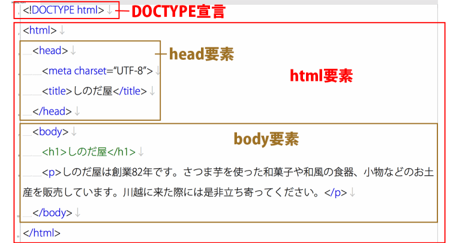

HTMLについて
ＨＴＭＬとは
ＨＴＭＬはＷｅｂページを記述するための言語です。ここではＨＴＭＬについて 簡単に説明しています。
1.押さえとくべき考え方
HTMLとはwebブラウザ側が正しく認識をし、ユーザに必要な情報を届けるための 文書構成を決定するものです。 それぞれの文書構成には、HTML特有の名前が付けられておりそれに従った書き方が必要になります。 文章にも章→節→句と区別されるように、HTMLはこの文章がどんな役割をする部分なのか 明確に名前をつける言語だと考えるとわかりやすいです。 HTMLはすべて、<要素名></要素名>のように、役割を明確にしたい部分をタグで囲って記述します。 例えば<p>つかれた</p>などです。こう記述をすることで、ブラウザ側でこの部分は文章だと認識されます。
2.ＨＴＭＬの基本構成
<!doctype HTML> <html> <head> </head> <body> </body> </html> 上記の部分はHTMLを記述していく上で必ず必要な部分です。詳しいことは次回解説します <head>要素は、実際のＷｅｂページには表示されない部分です。 この部分には、主にページには表示されないけどページを動かすために必要な情報が記述されている部分です。 ここで記述する内容が、検索ヒットにかかわってくる部分となります。詳しくはSEOについて調べてみてください。 次に、<body>要素は<head>要素とは違ってページが読み込まれたときに実際のＷｅｂページに表示される部分です。 私たちが実際にＷｅｂページを閲覧する内容を作る要素です。  ※タグは返しのタグもあるが以下、省略とする。 ＊→返しタグがないタグ
次へ